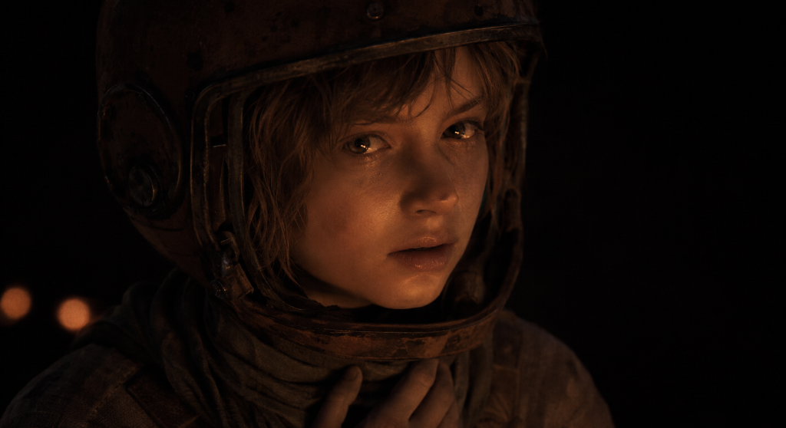
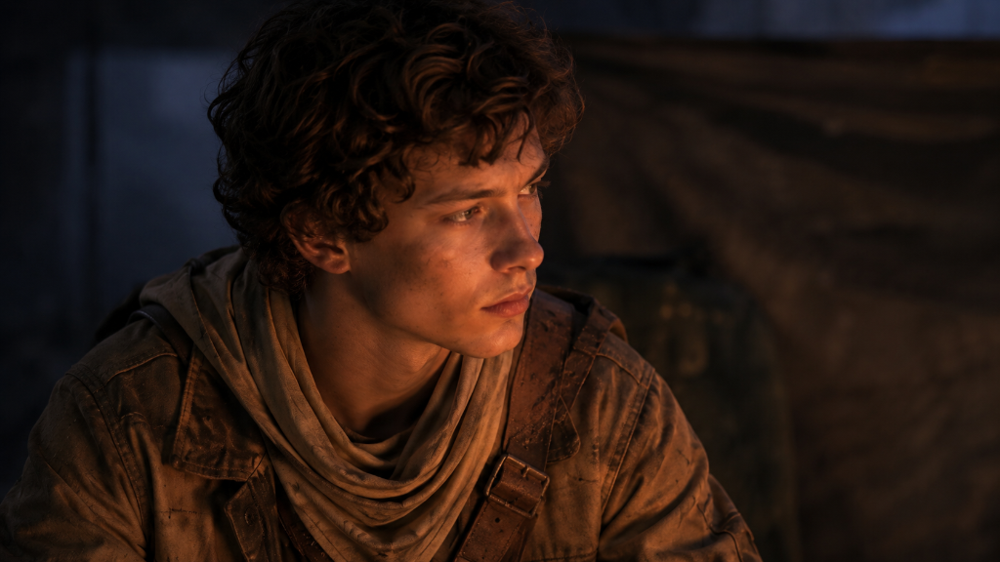
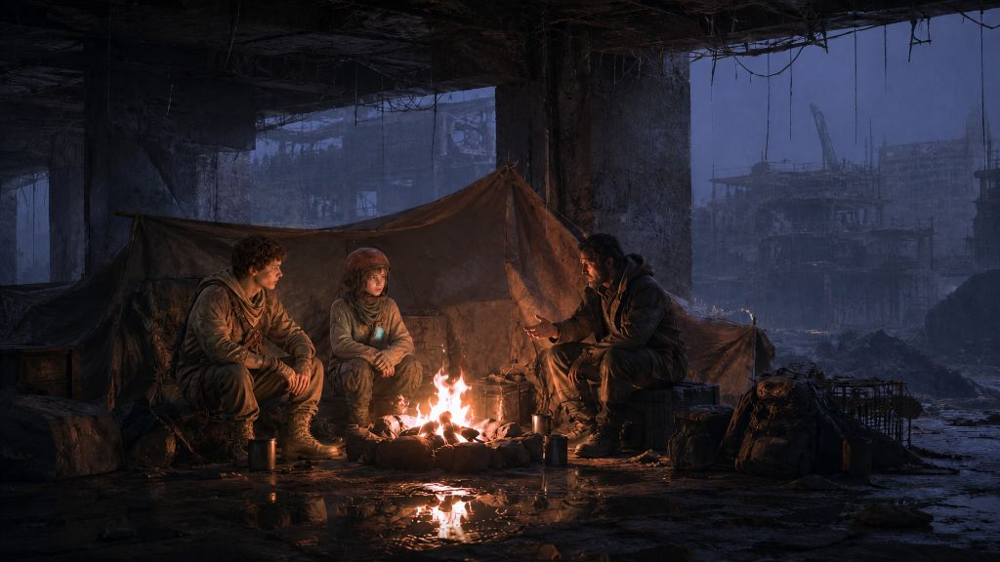
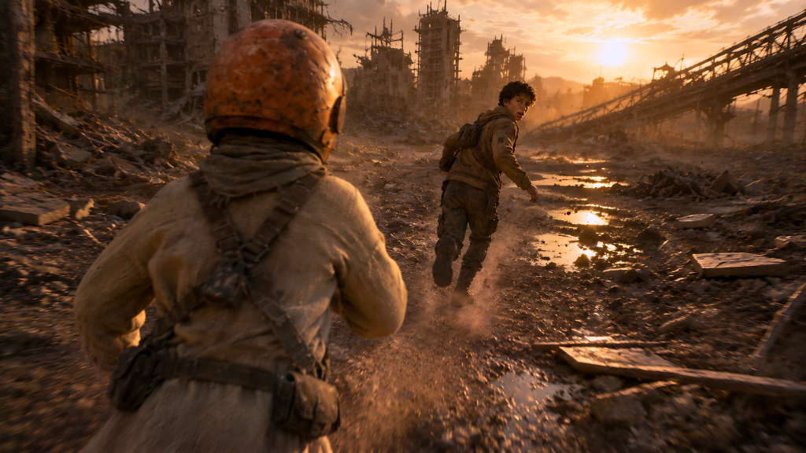
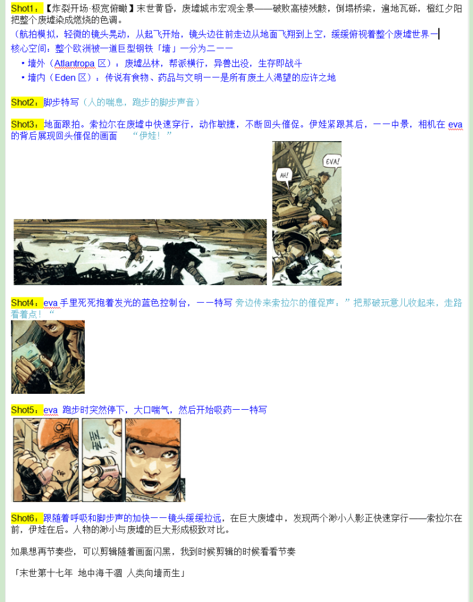
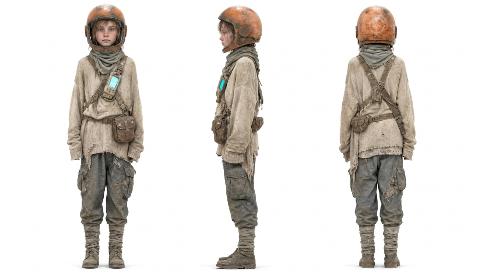
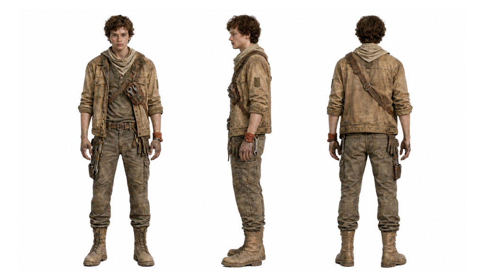
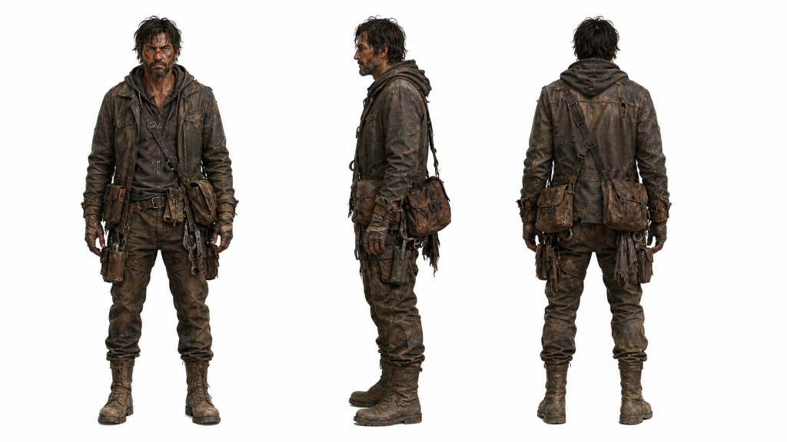
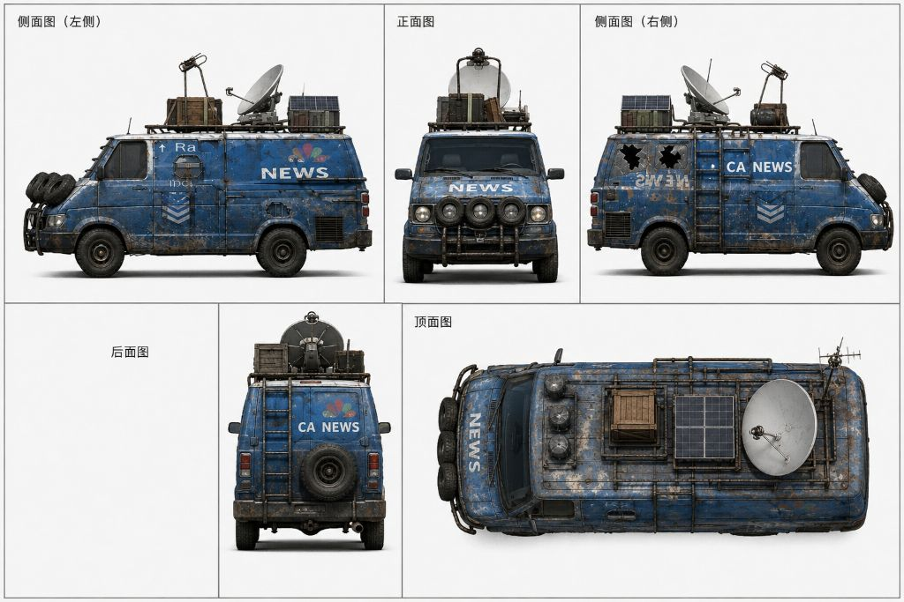
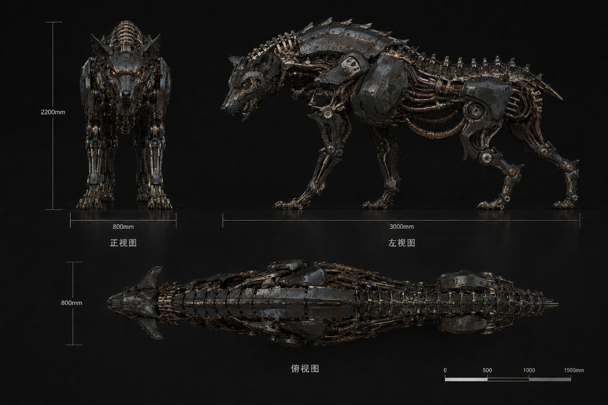

AI-ASSISTED SHORT / STORYBOARD · KEYFRAMES · DESIGN
The Wall / 墙
一个以 AI 辅助完成的小说改编废土叙事项目，包含部分分镜脚本、生图关键帧、角色与道具设计，以及完整视频。项目重点放在女主 Eva 的关键帧与角色设计上，以她作为世界观情绪和审美气质的核心入口。An AI-assisted post-apocalyptic novel adaptation including storyboard scripting, generated keyframes, character and prop design, and a completed video. The page foregrounds Eva's keyframes and character design as the project's emotional and visual core.
Format分镜脚本 / 关键帧 / 设计稿 / 完整视频Storyboard / Keyframes / Design Sheets / Full Video
Focus女主关键帧、角色设计、废土氛围Heroine keyframes, character design, wasteland mood
成片Film
页面中直接嵌入完整视频，时长约 3 分 05 秒。若浏览器环境不能正常播放，可点击顶部按钮打开原始视频文件。The full film is embedded below with a running time of about 3:05. If playback is limited in your browser, open the original file from the top button.
《The Wall / 墙》呈现出明显的末世废土设定：破败城市、残垣断壁、简陋营地、机械威胁，以及围绕巨型“墙”展开的秩序划分。现有分镜脚本中已经建立了从宏观环境、人物奔逃到手部细节与喘息节奏的镜头递进，说明这个项目不是单纯生图集合，而是围绕叙事节奏推进的视频化创作。The Wall builds a clear post-apocalyptic world of ruined cities, makeshift camps, mechanical threats, and a giant dividing wall. The storyboard script already structures the project from macro environment shots to running, object close-ups, and breath-paced detail beats, showing a narrative film approach rather than a loose image collection.
从作品集角度，这个项目最适合被定位为“小说改编驱动的世界观短片练习”：一方面展示你能从文本出发搭建分镜与关键帧，另一方面也展示你能把角色设计、道具设计和完整视频组织成统一的视觉系统。For portfolio positioning, this works best as a novel-adaptation-driven worldbuilding short: it demonstrates how you move from text to storyboard and keyframes, while organizing character design, prop design, and finished video into one cohesive visual system.
导演向拆解Directorial Framing
如果把这个项目作为导演向案例来讲，它最有价值的地方不只是“做出了一支视频”，而是你如何从小说里提炼可视化信息，再通过分镜、关键帧和设计稿逐步把抽象文本变成有节奏、有情绪推进的影像。它说明你在做的不是孤立的生成，而是从叙事逻辑出发组织视觉、角色关系和镜头顺序。As a directorial case study, the project's value lies not only in producing a finished video, but in how abstract literary material is translated into pacing, character relations, and visual sequence through boards, keyframes, and design sheets.
镜头与视觉系统Shot Language & Visual System
项目的镜头气质很明确：宏观废墟建立空间压迫，中近景人物特写承接情绪，低角度奔跑镜头强化逃亡感，篝火场景则给出人物关系的短暂停顿。冷蓝环境、暖色火光、破旧头盔、改装车辆与机械狼共同构成了统一的废土世界观。The shot language is clear: wide ruins create spatial oppression, medium-close portraits carry emotion, low-angle running frames intensify escape, and firelit camp scenes create brief pauses in tension. Cool blue ruins, warm firelight, the worn helmet, modified van, and mechanical wolf all reinforce one cohesive wasteland system.
女主重点Heroine Focus
Eva 的角色设计与关键帧重点展示人物外形、服装细节及不同镜头中的视觉一致性。Eva’s designs and keyframes focus on her silhouette, costume details and continuity across shots.

Eva：情绪入口与视觉锚点Eva: Emotional Entry & Visual Anchor
Eva 的近景关键帧具有非常强的项目辨识度：破旧头盔、低饱和服装、微暖火光、黑暗背景与直视镜头的脆弱感，共同构成了这个项目最有记忆点的人物瞬间。它既能代表废土世界的质感，也能在首页或项目页中立刻建立观众的情绪连接。Eva's close-up keyframe is highly memorable: the worn helmet, muted clothing, warm firelight, dark background, and fragile direct gaze create the most iconic emotional moment of the project. It captures both the tactile worldbuilding and the human core of the story.
她的角色三视图则进一步稳定了身份信息：头盔比例、松垮针织上衣、裤装轮廓、腰间与肩部配件、胸前发光装置，都是后续关键帧和视频生成中维持一致性的核心锚点。Her turnaround sheet stabilizes identity across production: helmet proportion, oversized knitwear, trouser silhouette, strap accessories, and chest light module all serve as continuity anchors for later keyframes and video generation.
关键帧与氛围Keyframes & Mood
这一组最终画面展示了《The Wall / 墙》的核心气质：冷暖对比、末世废墟、奔逃感与短暂的人物停顿。These final images define the project's tone through warm/cool contrast, urban ruins, chase energy, and short moments of human pause.

男主关键帧Male Lead Keyframe
索拉尔的侧脸被火光勾亮，保持了少年生存者的敏感与警惕，也与 Eva 的近景形成角色关系上的互补。Solal's firelit side profile complements Eva's close-up, presenting a younger survivor energy marked by alertness and restraint.

营地环境关键帧Camp Environment Keyframe
篝火暖光与室外冷蓝废墟形成鲜明对比，让项目在危机之外拥有一瞬间的人物关系和叙事温度。The fire's warmth against the blue ruined city creates a brief emotional shelter within the larger tension of the wasteland.

追逐镜头关键帧Chase Keyframe
低角度跟拍和夕阳废墟带来极强的运动势能，是最适合用来表现镜头设计与视频生成控制力的一张图。The low tracking angle and sunset ruins make this the strongest frame for showing motion design and image-to-video control.
从小说到视频的流程From Novel to Video
从原作文本提取情节节点，转化为分镜、角色场景设定与关键画面，再通过动画镜头、剪辑和后期合成形成完整影像。Story beats are adapted into storyboards, character and environment designs, and key images, then developed into animated shots, editing and compositing.
01文本提炼Text Adaptation
从小说中提取世界观、人物关系和情绪节点，确定镜头要讲什么。Extracting worldbuilding, relationships, and emotional beats from the novel.
02分镜脚本Storyboard Script
把环境建立、奔逃、手部特写与呼吸节奏拆成可执行镜头。Turning environment, running, object close-ups, and breathing rhythm into filmable shots.
03角色 / 道具设计Design Sheets
先建立角色和道具的比例、服装、功能与识别点，保证世界观的基础统一。Building character and prop identity first so proportion, costume, function, and recognition stay unified.
04关键帧生成Keyframe Generation
在角色和道具已经稳定的基础上，再生成承载情绪和镜头气质的关键帧画面。Generating emotionally charged keyframes only after characters and props are visually stabilized.
05视频生成Video Generation
把分镜、设定和关键帧进一步转化为连续运动影像，形成完整片段。Turning boards, designs, and keyframes into continuous moving sequences.
06剪辑与音乐整合Editing & Music
通过剪辑节奏、镜头衔接和音乐/声音加入，完成最终视频表达。Finalizing the work through editing rhythm, shot transitions, and music/sound integration.

分镜脚本页Storyboard Script Page
这页分镜脚本用文字和草图说明了从末世开场、脚步声特写、废墟奔跑到物件细节和呼吸节奏的镜头安排，同时也明确建立了“墙内 / 墙外”的世界结构。它非常适合放在过程页中，强调你不是只做成片，而是能把小说内容拆解成镜头语言。This page combines text and rough panels to structure the opening wasteland panorama, footsteps, running through ruins, object close-ups, and breath-driven pacing, while defining the inside/outside logic of the wall. It is ideal for your process section because it proves you can translate literature into shot language.
制作方法：先提炼故事中的人物目标与环境冲突，再以场景建立、人物奔逃、道具特写和短暂停顿组织镜头。分镜阶段确定画面构图、镜头衔接与昼夜变化，随后使用 Seedance 2.0 进行AI视频生成，并通过剪辑与后期整合保持叙事连续性。Workflow: The story is translated into establishing shots, character movement, prop close-ups and moments of pause. Storyboards define composition, transitions and day/night changes. AI video is generated with Seedance 2.0, followed by editing and post-production to maintain narrative continuity.
角色与道具设计Character & Prop Design
角色轮廓、服装和道具设计与末世环境保持一致，以造型、材质和比例关系建立统一的视觉语言。Character silhouettes, costumes and props share a visual language with the post-apocalyptic setting through consistent forms, materials and proportions.

女主三视图Eva Turnaround
女主的设计最适合作为本项目角色部分的主图，既清晰又有辨识度，也是后续关键帧统一的基础。Eva's turnaround is the best lead image for the character-design section and a strong basis for continuity.

男主三视图Solal Turnaround
索拉尔的服装结构、工具包和整体少年体态，强化了他作为废土生存者的角色定位。Solal's clothing construction, tool bag, and youthful stance define him clearly as a survivor.

成年男性设定Adult Male Design
更粗粝、更沉重的装备语言让第三位角色与两位年轻角色形成代际和经验上的对比。The heavier, rougher survival gear contrasts him against the younger leads in age and experience.

新闻车多视图News Van Prop Sheet
这辆改装新闻车极具废土识别度，卫星锅、太阳能板与破旧车身共同构成了场景叙事的延伸。The modified news van extends the narrative world through its satellite dish, solar panels, and worn survival aesthetic.

机械狼设计Mechanical Wolf Design
带尺寸标注的机械狼既像敌对生物又像工业装置，能明显提升项目的类型强度与威胁感。The mechanical wolf, complete with dimensional labeling, intensifies the project's threat level and genre identity.
动作镜头参考Action Shot Reference
这一动作画面通过人物运动方向、废墟空间和镜头构图呈现追逐过程，呼应前期角色设定与末世环境设计。This action frame connects character movement, ruined environments and shot composition, bringing the character design into the chase sequence.